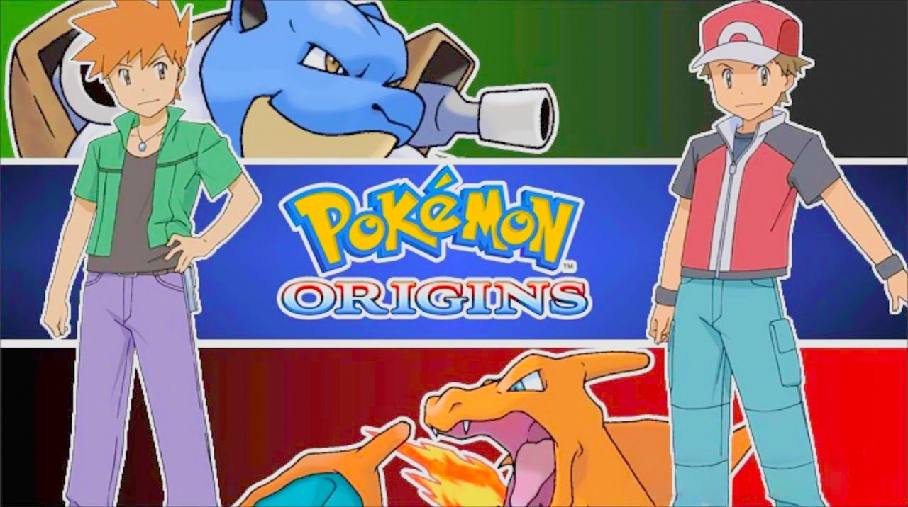
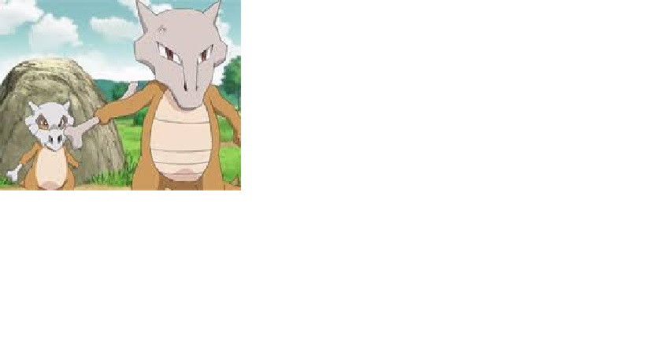

El anime estará protagonizado por el personaje principal y el rival de los juegos de Nintendo Pokémon Rojo y Pokémon verde originales.
Como en la vida, es obvio que en el anime Pokémon, los seres mágicos que viven en las pokébolas tengan también una mamá, pero esta historia, es diferente, es la de Cubone, el Pokémon sin madre. Hasta ahí todo bien, porque en la vida real hay seres humanos que viven si mamá, sin embargo, la historia de Cubone es muy particular ya que él lleva parte del cuerpo de su madre consigo. Ese cráneo que lleva Cubone es el de su madre, tal y como señala la enciclopedia científica Pokédex.
